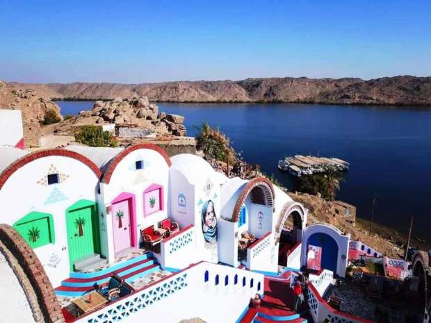
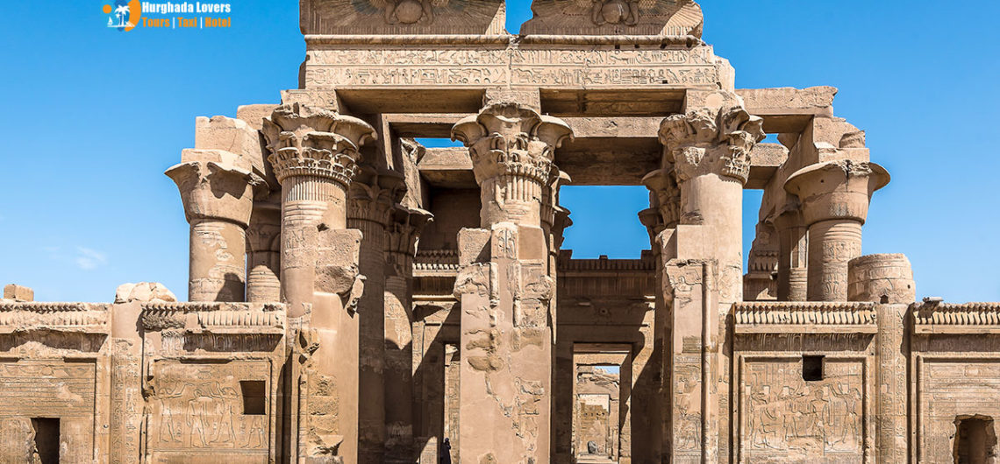

strategic gateway to the South. In ancient times, it was the main provider of granite used for obelisks and
sculptures.
Aswan is known for its beautiful Nile Valley scenery, significant archaeological sites and
its peaceful aura.

The Philae Temple was built by the last dynasty of ancient Egypt,the Ptolemaic. It is dedicated to Isis, the goddess of healing, birth,and magic, her husband Osiris, and their son Horus. The temple isone of the last places where ancient Egyptian religion survived after Christianity swept the shores in 550AD.
 The Aswan High Dam, located in southern Egypt, was built across
the Nile River to regulate the flow of water and provide a reliable source of irrigation for the surrounding
agricultural areas. Prior to the construction of the dam, Egypt relied on the annual floods of the Nile to
irrigate their crops.
The Aswan High Dam, located in southern Egypt, was built across
the Nile River to regulate the flow of water and provide a reliable source of irrigation for the surrounding
agricultural areas. Prior to the construction of the dam, Egypt relied on the annual floods of the Nile to
irrigate their crops.
 The Nubian Village in Aswan Egypt. Aswan Nubian Village is a picturesque location that captures the essence of the Nubian culture. The village is situated in southern Egypt and is home to some of the most ancient and fascinating civilizations that date back to prehistoric times.
 Kom Ombo means “The Hill Of Gold” as the word "Kom" means "Hill" in Arabic while the word "Ombo" means gold in hieroglyphics. It was constructed in the Greco-Roman Period, from 205 till 180 BC in the ruling period of King Ptolemy V with some additions later on during the Roman period.
| Aspect | Information |
|---|---|
| Population | Approximately 1.5 million |
| Location | southern Egypt |
| Nile River | Aswan is on the Nile River,known for its High Dam and lake Nasser |
| Historical Sites | Home to ancient temples such as Abu Simbel and Philae |
| Economy | Relies on agriculture,torism,and hydroelectric power |